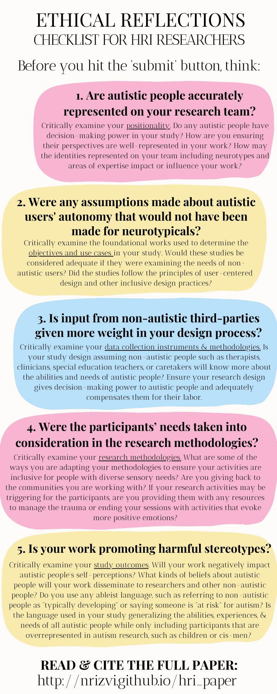

Are Robots Ready to Deliver Autism Inclusion?
Autism is multi-dimensional and can be understood in a variety of ways. Some may use the medical model to define autism as a disorder, but this belief contributes to the marginalization we face in society. In contrast, 87% of autistic adults in the US view it as an identity. Neurodiversity is a term used to describe all the diverse ways our brains can differ from each others' and also includes other cool identities such as ADHD, dyslexia, dyscalculia, and many more! According to this framework, autism is a distinct neurotype, or unique way of thinking or expressing our thoughts.
Unfortunately, robotics research fails to include these diverse perspectives. Our latest paper quantifies the impact of this lack of inclusion in the ways we research, design, develop, and test robots for autistic people.
Video Summary (Subtitles on TikTok)
♬ original sound - scientistinpink
Figures
Figure 1. More than 90% of HRI papers defined autism as an 'illness' and explored ways to diagnose or 'treat' it in their studies. This graph is interactive: you can hide any category by clicking on its corresponding label.
Figure 2. Less than 10% of HRI papers (shown in pink) included a representative sample of women and girls with autism in their studies. The majority (in yellow) did not report the participants' gender demographics.
Our Checklist
We developed this checklist specifically for HRI researchers to assess the inclusivity of their work.
However, it may also be useful for other researchers.
Click here to download the PDF and
here to download the latex file to incorporate in your paper(s).
{kind=link}
